Operating Documentation
Direction 5440001-3, Rev# 6
Signa HDxt Service Methods
Module Version 9.0, Version Date 10/6/09
Operating Documentation |
| Required Persons | Preliminary Reqs | Procedure | Finalization |
|---|---|---|---|
| 1 | Not Applicable | 15 mins | Not Applicable |
Follow this process to prepare for the MCQA test using the 1.5T HD 8-Channel Wrist Array by Invivo, Catalog Number M3335LJ.
| NOTE: | Coils do not ship with phantoms. Phantoms come in a unified phantom set with the MR system. |
| Item | Qty | Effectivity | Part# | Manufacturer | |
|---|---|---|---|---|---|
| 1.5T HD 8-Channel Wrist Array Legacy Phantom | 1 | Legacy Phantom Set | 5160986-5 | - | |
| Cubicle Unified Phantom | 1 | Unified Phantom Set | 5342681 | - | |
| Wrist Array Baseplate with Baseplate Riser | - | 5160986-12 | - | ||
| Condition | Reference | Effectivity |
|---|---|---|
For HDx, HDxt, and HDe, the following coil configuration names must be installed to run this tool: HDWRIST. | - | - |
For Discovery MR450 and Optima MR450w, the following coil configuration names must be installed to run this tool: GE_HDx Wrist. | - | - |
| NOTE: | If installing the coil for the first time in a system, please refer to Auto Coil Install. |
Place the baseplate on the table as shown in Illustration 1.
Illustration 1: Baseplate on the Table
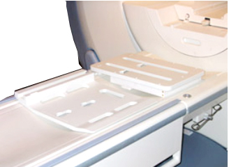
Attach the baseplate riser to the baseplate as shown in Illustration 2 and Illustration 3.
Illustration 2: Baseplate Riser Placed on Baseplate. Align Knobs and Lock by Pulling Back
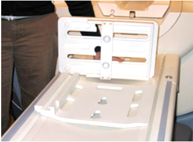
Illustration 3: Baseplate and Riser in the Locked Position
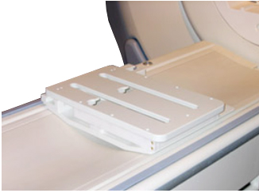
Attach the 1.5T HD 8-Channel Wrist Array to the cradle . Note the serial number of the coil. See Illustration 4.
Illustration 4: Placement of Coil on Baseplate Assembly in a Similar Fashion using the Knobs to Align and Lock
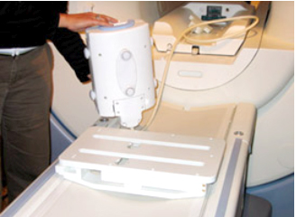
Slide the locked coil to center position and mechanically locate and align. See Illustration 5.
Illustration 5: Line Up to Baseplate Alignment Marker
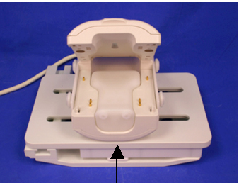
Place phantom in the coil. See Illustration 5.
Lock the coil using the lock on inferior top lock. See Illustration 6.
Illustration 6: Landmark Reference Marks
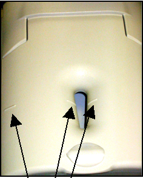
Establish an axial landmark on the line on top of the coil. Advance to scan. Illustration 6.
Click here to go to the MCQA Test.
Place the baseplate of the wrist coil on the patient table as shown in Illustration 7.
Illustration 7: Baseplate of Wrist Coil on Patient Table
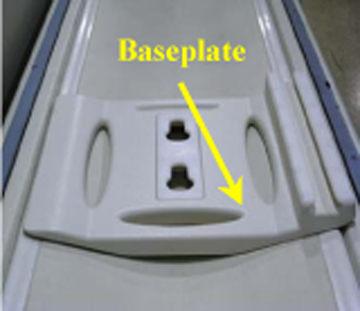
Attach the base plate riser to the base plate as shown in the Illustration 8. Base plate and the Base plate riser in the locked position are shown in Illustration 9.
Illustration 8: Baseplate Riser Attached to Baseplate
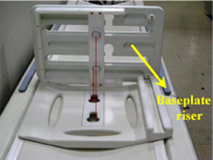
Illustration 9: Baseplate and Riser in Locked Position
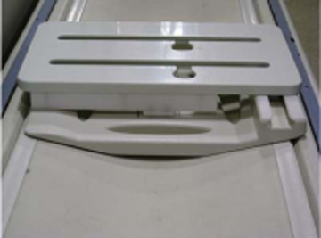
Attach 1.5T HD 8-Channel Wrist Array to the baseplate assembly using the knobs is as shown in Illustration 10. Slide the locked coil to center and align properly.
Illustration 10: Wrist Array Attached to Baseplate
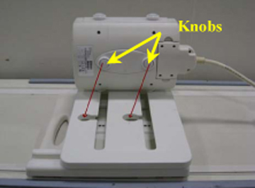
Place the cubical unified phantom in the coil by lifting the upper portion of the coil as shown in Illustration 11. Close the coil and lock it as shown in Illustration 12.
Illustration 11: Cubicle Unified Phantom Positioned in Coil
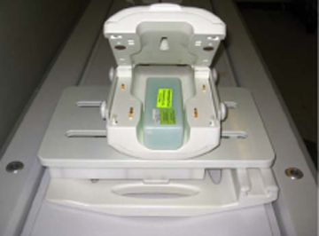
Illustration 12: Coil Closed and Locked
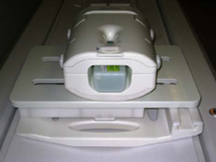
Connect the coil to port A of the LPCA and landmark the coil at the marks shown in Illustration 13 and advance to scan.
Illustration 13: Lock and Landmark the Coil
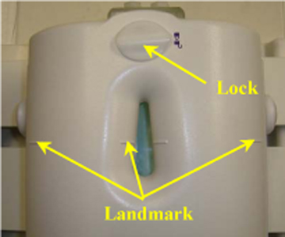
Click here to go to the MCQA Test.
No finalization steps.